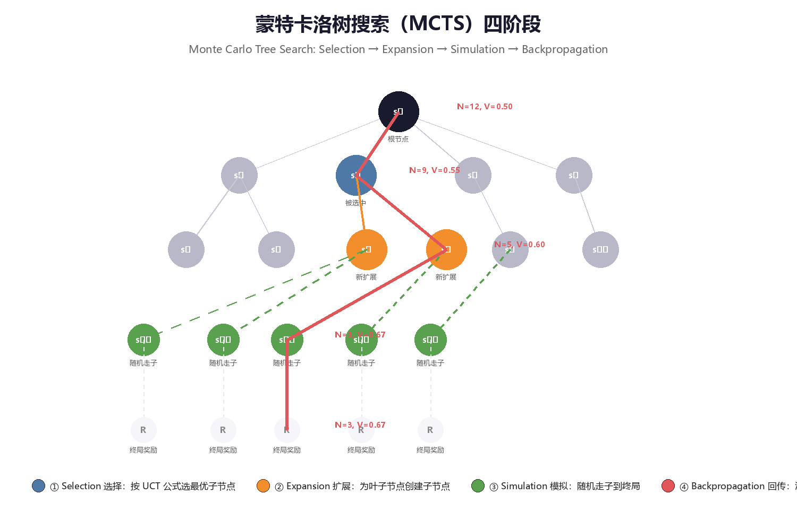
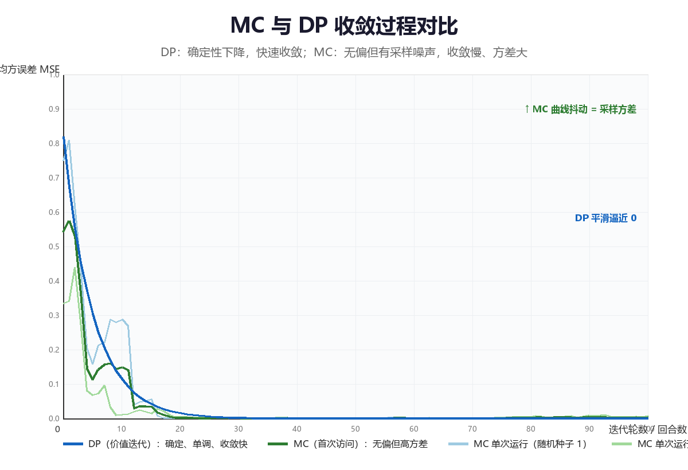

蒙特卡洛方法（Monte Carlo Methods）
蒙特卡洛（Monte Carlo, MC）方法是不依赖环境模型的第一族强化学习算法： 它不对转移概率 \(P\) 与奖励函数 \(R\) 做任何假设，只要求能够与环境交互并 拿到完整的回合（episode）经验，然后用"大量样本的平均"去逼近 "数学期望"。本章从 MC 的核心思想出发，依次讲解 MC 预测（首次访问 与每次访问）、MC 控制（探索性初始化与 ε-greedy）、off-policy MC 与重要性采样（Importance Sampling），最后深入蒙特卡洛树搜索 （Monte Carlo Tree Search, MCTS）——它在 AlphaGo 与 AlphaZero 中的 应用，使 MC 思想在 2016 年后重新成为学界与工业界的焦点。全文代码均为 可运行的 Python 3 实现，综合实验为 Sutton & Barto 例 5.1 的 Blackjack （21 点）环境。
一、从模型到经验——MC 的核心思想
1.1 当模型不可得：从"期望"到"平均"
第 2 章的动态规划（DP）有一个硬性前提：环境模型已知，即转移概率 \(P(s', r \mid s, a)\) 与奖励函数 \(R(s, a)\) 完全可得。但现实世界很少满足 这个前提：
| 场景 | 模型可得吗？ | 原因 |
|---|---|---|
| 国际象棋、围棋 | 可得（规则即模型） | 规则已知，但状态空间太大，DP 扫不完 |
| 游戏引擎内部 AI | 可得 | 但工程上常直接用"可模拟"代替"可计算" |
| 机器人控制 | 通常不可得 | 真实物理动力学复杂、含未知扰动 |
| 自动驾驶、推荐系统 | 不可得 | 环境是真实世界，根本不存在解析模型 |
当模型不可得时，贝尔曼方程中的期望 \(\mathbb{E}[\cdot]\) 无法直接计算， 只能退而求其次：用采样代替期望，用经验代替模型。这就是蒙特卡洛方法 的全部出发点。
核心思想：MC 方法把"计算期望"替换为"做实验取平均"。既然无法从 模型算出"从这个状态出发平均能拿多少回报"，那就真实地从这个状态出发 走完一个回合，记录实际拿到的回报；多走几个回合，把回报平均起来，就 得到价值的估计。模型不是必需的，回合经验才是。
1.2 大数定律：MC 的数学依据
MC 方法之所以成立，靠的是概率论中最早、最基础的结论之一——大数定律 （Law of Large Numbers, LLN）：
设 \(X_1, X_2, \dots\) 是独立同分布（i.i.d.）的随机变量，且期望 \(\mathbb{E}[X]\) 有限，则样本均值依概率收敛到期望：
\[\frac{1}{N}\sum_{i=1}^{N} X_i \;\xrightarrow{\;p\;}\; \mathbb{E}[X], \qquad N \to \infty\]
把 \(X_i\) 换成"从状态 \(s\) 出发按策略 \(\pi\) 走完一个回合得到的回报 \(G_t^{(i)}\)"，大数定律立即给出 MC 价值估计器：
其中 \(N(s)\) 是状态 \(s\) 被访问并用于更新的次数。这个估计器有两个直接 推论：
| 性质 | 内容 | 含义 |
|---|---|---|
| 无偏性（unbiased） | \(\mathbb{E}[\hat{v}_\pi(s)] = v_\pi(s)\) | 单次估计可能偏，但平均意义上不系统性地偏离真实值 |
| 一致性（consistent） | \(N \to \infty\) 时 \(\hat{v}_\pi \to v_\pi\) | 样本越多越准，最终收敛到真值 |
| 方差衰减 | \(\mathrm{Var}[\hat{v}_\pi(s)] = \mathrm{Var}[G_t] / N\) | 方差随样本量以 \(1/N\) 的速度下降（详见第六节图） |
核心思想：MC 用"样本平均"换取"模型自由"。代价是估计带有随机 波动（方差），但波动随回合数增加而缩小，且估计本身无偏——这是 MC 相对于后续时序差分（TD）方法最重要的理论优势。
1.3 MC 与 DP 的对比
MC 与第 2 章的 DP 解决同一个问题（求 \(v_\pi\) 或 \(v_*\)），但路径完全不同：
| 维度 | 动态规划 DP | 蒙特卡洛 MC |
|---|---|---|
| 是否需要环境模型 | 需要（已知 \(P, R\)） | 不需要，只需采样经验 |
| 是否需要完整回合 | 不需要，可逐步扫描 | 必须等回合结束才能更新 |
| 更新对象 | 全部状态（同步扫描 sweep） | 仅本回合访问过的状态 |
| 自举（Bootstrapping） | 是（用 \(v_k(s')\) 更新 \(v_{k+1}(s)\)） | 否（用真实回报 \(G_t\)，不用其他估计值） |
| 偏差（Bias） | 无（模型精确时） | 无（估计器无偏） |
| 方差（Variance） | 低（无采样） | 高（回报 \(G_t\) 本身随机） |
| 计算方式 | 迭代求解贝尔曼方程 | 采样 + 求平均 |
| 适用前提 | 模型已知、状态空间可枚举 | 回合制任务、可交互采样 |
关键区别浓缩为两句话：
DP： v(s) ← Σ_a π(a|s) Σ_{s',r} P(s',r|s,a) [r + γv(s')] 用模型算期望
MC： v(s) ← 平均{ G_t } 用样本算平均
核心思想：DP 的更新公式里"期望"是算出来的（需要模型），MC 的 更新公式里"期望"是平均出来的（需要样本）。前者精确但依赖模型， 后者免模型但依赖足够的回合经验。MC 是 DP 在模型未知时的"替身"。
1.4 回合与回报
MC 方法只适用于回合制任务（episodic tasks）——即交互过程必然在有限 步内结束（到达终止状态）。围棋、21 点、游戏关卡、迷宫寻路都是回合制； 而持续运行的恒温控制、股票交易则不是（需要第 6 章以后的方法）。
设一个回合在时刻 \(T\) 终止，MC 使用的量是回报（return）：
| 记号 | 含义 |
|---|---|
| \(G_t\) | 时刻 \(t\) 之后的折扣累积回报 |
| \(T\) | 回合终止时刻（有限） |
| \(\gamma \in [0, 1]\) | 折扣因子；回合制任务常取 \(\gamma = 1\) |
| \(R_{t+1}\) | 执行动作 \(A_t\) 后环境给出的即时奖励 |
回合制 + 有限 \(T\) 是 MC 的两个硬前提：回报必须在回合结束时才能 完整计算，因此 MC 的更新粒度是"整个回合"，而不是"单步"。
1.5 本章路线图
┌─────────────────────────────────────────────────────────────┐
│ 已知环境模型？ │
│ 是 ──► 第 2 章：动态规划（算精确期望） │
│ 否 ──► 与环境交互，收集完整回合经验 │
└───────────────────────────────┬─────────────────────────────┘
▼
┌─────────────────────────────────────────────────────┐
│ 第 3 章 蒙特卡洛：用"回报的平均"代替"期望" │
│ ├─ MC 预测：V(s) ← 平均(G_t)（第 2 节） │
│ ├─ MC 控制：评估 + ε-greedy 改进（第 3 节） │
│ ├─ off-policy MC 与重要性采样（第 4 节） │
│ └─ MCTS：把 MC 采样组织成树搜索（第 5 节） │
└─────────────────────────────────────────────────────┘
▼
┌─────────────────────────────────────────────────────┐
│ 第 4 章 时序差分：单步更新、自举、方差更低（预告） │
└─────────────────────────────────────────────────────┘
1.6 一个最小数值示例：抛硬币回合
用最简单的单状态 MDP 直观感受"平均收敛到期望"的过程。状态 \(s\) 只有一个 动作：掷一次公平硬币，正面朝上则回合结束、回报 \(G = +1\)；反面朝上则 回合结束、回报 \(G = -1\)。于是真实价值 \(v(s) = \mathbb{E}[G] = 0\)。
| 回合序号 \(i\) | 1 | 2 | 3 | 4 | 5 | 6 | 7 | 8 | 9 | 10 |
|---|---|---|---|---|---|---|---|---|---|---|
| 回报 \(G_i\) | \(+1\) | \(-1\) | \(+1\) | \(+1\) | \(-1\) | \(-1\) | \(-1\) | \(+1\) | \(+1\) | \(-1\) |
| 累计平均 \(\hat v\) | 1.00 | 0.00 | 0.33 | 0.50 | 0.20 | 0.00 | \(-0.14\) | 0.00 | 0.11 | 0.00 |
观察三点：
- 单次估计完全不可靠：前 10 个回合的平均在 \(-0.14 \sim 1.00\) 之间 剧烈跳动，任何单次 \(G_i\) 都与真实值 0 相去甚远。
- 平均逐渐稳定：随着 \(N\) 增大，波动幅度按 \(1/\sqrt{N}\) 量级缩小 （本例方差 \(\mathrm{Var}(G) = 1\)，\(N = 100\) 时标准差约 0.1）。
- 无偏性：平均的"中心"始终是 0，没有系统性偏移——这正是 MC 估计 区别于 TD 估计的地方（TD 有偏，见第 4 章）。
这个例子虽然平凡，却浓缩了 MC 的全部本质：单个样本毫无意义，大量样本 的平均才有意义。
二、MC 预测：首次访问与每次访问
2.1 问题定义：免模型的策略评估
MC 预测（MC Prediction） 解决免模型版本的策略评估问题：给定策略 \(\pi\)（不要求知道环境模型），仅凭采样得到的回合经验，估计状态价值函数 \(v_\pi\)。
DP 用模型算这个期望；MC 的做法是：
① 按策略 π 采样大量回合
② 对每个回合，计算每个访问过的状态 s 对应的回报 G_t
③ V(s) ← 所有回合中"与 s 相关的回报"的平均值
一个状态在一个回合中可能被访问多次（比如走迷宫时反复经过同一个路口）。 按"哪些访问参与平均"的不同，MC 预测分成首次访问与每次访问 两种变体。
2.2 首次访问 MC（First-Visit MC）
首次访问 MC 在每个回合中，只把状态 \(s\) 第一次被访问时的回报 \(G_t\) 计入平均，后续再次访问同一状态产生的回报一律忽略：
伪代码（Sutton & Barto 算法 5.1 风格）：
输入：策略 π，要采样的回合数 M
初始化：returns(s) ← 空列表，∀s ∈ S
循环 i = 1, 2, ..., M：
用 π 生成一个回合：S₀, A₀, R₁, S₁, ..., S_{T-1}, A_{T-1}, R_T
G ← 0
对该回合的每一步 t = T-1, T-2, ..., 0： ← 从后往前累加回报
G ← γG + R_{t+1}
若 S_t 在该回合中首次出现：
将 G 追加到 returns(S_t)
输出：V(s) ← average(returns(s))，∀s ∈ S
从后往前累加是计算回报的经典技巧：只需要一次遍历就能得到所有时刻的 \(G_t\)，因为 \(G_t = R_{t+1} + \gamma G_{t+1}\)。
核心思想：首次访问 MC 中，每个状态的每次"更新"都对应一段独立 的、从该状态首次出现到回合结束的真实轨迹。由于回合之间独立，这些 回报是 i.i.d. 的，大数定律直接适用，估计器无偏。
2.3 每次访问 MC（Every-Visit MC）
每次访问 MC 则把状态 \(s\) 在回合中每一次被访问时的回报 \(G_t\) 都计入平均。两者唯一的区别就在"计不计数"这一行：
| 维度 | 首次访问（First-Visit） | 每次访问（Every-Visit） |
|---|---|---|
| 每个回合对状态 \(s\) 的更新次数 | 至多 1 次（首次出现时） | 每次出现都更新 |
| 估计器偏差 | 无偏 | 一般有偏（同一回合内多次访问的回报相关） |
| 估计器一致性 | 收敛（大数定律） | 收敛（虽然相关，但平均仍趋于真值） |
| 方差 | 样本间独立，方差更可控 | 样本间相关，方差分析与控制更复杂 |
| 计算开销 | 略小 | 略大（每个状态每次访问都要更新） |
| 理论分析难度 | 简单，是教科书标准形式 | 较难（依赖马尔可夫链再生理论） |
| 实际使用 | 更常见 | 在函数逼近场景中更自然 |
核心思想：首次访问与每次访问渐近等价（回合数 \(\to \infty\) 时 收敛到同一个 \(v_\pi\)），差别在有限样本下的统计性质。实践上两者结果 往往非常接近，首次访问因理论干净而更受青睐。选择原则：想要无偏且 便于分析，用首次访问；实现简单且不介意细微偏差，用每次访问。
2.4 MC 预测的流程总览
采样回合 计算回报 平均更新
┌─────────────────┐ ┌─────────────────┐ ┌─────────────────┐
│ π 与环境交互 │ │ 从后往前累加 │ │ V(s) ← V(s) │
│ 得到 (S,A,R) 序列│ ──► │ G ← γG + R │ ──► │ + (G−V(s))/N│
└─────────────────┘ └─────────────────┘ └─────────────────┘
需要完整回合 O(回合长度) 只更新访问过的状态
2.5 Python 实现：五状态走廊上的首次访问 MC
用最简单的回合制环境——五状态走廊（状态 0 与 4 为吸收终止状态， 动作 0=左移、1=右移，到达右端奖励 \(+1\)、左端奖励 \(-1\)，\(\gamma = 1\)， 策略为均匀随机）——演示首次访问 MC 预测：
import random
# ---------- 环境：五状态走廊（简单回合制 MDP） ----------
# 状态 0 与 4 为吸收终止状态；动作 0 = 左移，1 = 右移
N_STATES = 5
TERMINAL = {0, 4}
def step(s, a):
"""执行一步，返回 (下一状态, 奖励, 是否终止)"""
ns = max(0, min(N_STATES - 1, s + (1 if a == 1 else -1))) # 越界截断
if ns == 4:
return ns, +1.0, True # 右端终止，奖励 +1
if ns == 0:
return ns, -1.0, True # 左端终止，奖励 -1
return ns, 0.0, False
def generate_episode(policy, start=2):
"""按策略采样一个完整回合，返回 [(s, a, r), ...]"""
episode, s = [], start
while True:
a = policy(s)
ns, r, done = step(s, a)
episode.append((s, a, r))
if done:
break
s = ns
return episode
# ---------- 首次访问 MC 策略评估 ----------
def first_visit_mc(policy, episodes=5000, gamma=1.0):
returns = {s: [] for s in range(N_STATES)} # 每个状态的回报列表
for _ in range(episodes):
ep = generate_episode(policy)
G, seen = 0.0, set()
# 从回合末尾向前累加回报（G_t = r + γ·G_{t+1}）
for t in range(len(ep) - 1, -1, -1):
s, a, r = ep[t]
G = r + gamma * G
if s not in seen: # 仅首次访问参与平均
seen.add(s)
returns[s].append(G)
return {s: (sum(rs) / len(rs) if rs else 0.0) for s, rs in returns.items()}
def random_policy(s):
return random.choice([0, 1])
if __name__ == '__main__':
random.seed(42)
V = first_visit_mc(random_policy)
print("首次访问 MC 估计的 V(s)（均匀随机策略，5000 回合）:")
for s in range(N_STATES):
print(f" V({s}) = {V[s]:+.3f}")
# 预期输出（示意，数值随随机种子略有波动）:
# 首次访问 MC 估计的 V(s)（均匀随机策略，5000 回合）:
# V(0) = +0.000
# V(1) = -0.498
# V(2) = +0.002
# V(3) = +0.500
# V(4) = +0.000
结果验证：该走廊是对称随机游走（左右概率各 0.5、奖励 \(\pm 1\) 对称）， 由赌徒破产问题的经典结论，解析值为 \(V(1) = -0.5,\; V(2) = 0,\; V(3) = +0.5\)。5000 回合后 MC 估计与解析值误差在 \(10^{-3}\) 量级——这正是 大数定律在起作用。
2.6 增量式平均：从"存列表"到"在线更新"
2.5 节的实现把每个状态的回报全部存进列表再求平均。更优雅的做法是 增量式平均（incremental mean）：每来一个回报 \(G\)，就地更新：
其中 \(N(s)\) 是 \(s\) 已累计的更新次数。这行式子就是"新平均 = 旧平均 + 步长 × 误差"，是几乎所有强化学习更新公式的共同骨架：
新估计 ← 旧估计 + 步长 × (目标 − 旧估计)
| 更新方式 | 步长 | 性质 |
|---|---|---|
| 样本均值 | \(\alpha = 1/N(s)\) | 随 \(N\) 递减，保证收敛到真值；但无法跟踪非平稳环境 |
| 常数步长 | \(\alpha = \text{const}\) | 不收敛到真值（在真值附近波动），但能跟踪缓慢变化的环境 |
| 衰减步长 | \(\alpha = c / (N(s)^\beta)\) | 折中：先快后慢，实践中常用 |
# 增量式平均版本的更新核心（替换 2.5 节中的列表逻辑）：
# V[s] += alpha * (G - V[s])，其中 alpha = 1.0 / N[s]
核心思想：\(\alpha = 1/N\) 让每个样本"地位均等"（样本均值）； \(\alpha\) 为常数则让新样本"权重更大"（适合非平稳）。MC 预测默认用 \(1/N\) 保证无偏收敛，TD 方法（第 4 章）默认用小常数 \(\alpha\) 换取 跟踪能力。 这一取舍贯穿全书。
2.7 数值对比：首次访问 vs 每次访问
在 2.5 节的走廊环境上，把"首次访问"改成"每次访问"只需删除 seen 集合
的判断——两种变体的代码差异仅一行：
# 追加在 2.5 节代码之后运行；复用其中的 step / generate_episode / random_policy
def every_visit_mc(policy, episodes=5000, gamma=1.0):
"""每次访问 MC：状态每次出现都记录回报（无 seen 判断）"""
returns = {s: [] for s in range(N_STATES)}
for _ in range(episodes):
ep = generate_episode(policy)
G = 0.0
for t in range(len(ep) - 1, -1, -1):
s, a, r = ep[t]
G = r + gamma * G
returns[s].append(G) # ← 唯一的区别：每次访问都记录
return {s: sum(rs) / len(rs) for s, rs in returns.items()}
if __name__ == '__main__':
random.seed(42)
Vf = first_visit_mc(random_policy)
Ve = every_visit_mc(random_policy)
exact = {0: 0.0, 1: -0.5, 2: 0.0, 3: 0.5, 4: 0.0}
print(f"{'状态':<6}{'首次访问':>10}{'每次访问':>10}{'解析值':>10}")
for s in range(N_STATES):
print(f"{s:<6}{Vf[s]:>10.3f}{Ve[s]:>10.3f}{exact[s]:>10.3f}")
# 预期输出（示意，数值随随机种子波动）:
# 状态 首次访问 每次访问 解析值
# 0 0.000 0.000 0.000
# 1 -0.498 -0.501 -0.500
# 2 0.002 0.001 0.000
# 3 0.500 0.499 0.500
# 4 0.000 0.000 0.000
结论：在本例（随机游走 + 对称奖励）中，两种变体 5000 回合后都与 解析值相差不到 \(10^{-2}\)，差异可以忽略。首次访问与每次访问的差别在 长回合、状态反复出现的任务中才会显现——此时每次访问的估计会因同一 回合内回报相关而产生轻微偏差，而首次访问始终无偏。
三、MC 控制：探索与利用
3.1 从预测到控制：GPI 的 MC 版本
MC 控制（MC Control） 解决控制问题：不求"给定策略的价值"，而是 直接找最优策略。与第 2 章相同，它遵循广义策略迭代（Generalized Policy Iteration, GPI） 的框架——评估与改进交替进行，只是两个环节 都换成免模型版本：
┌─────────────────────┐ ┌─────────────────────┐
│ 策略评估（MC 版） │ │ 策略改进（贪心版） │
│ 用回合回报估计 q_π │ ─────► │ π'(s) = argmax_a │
│ （首次访问 + 平均） │ │ q(s, a) │
└─────────────────────┘ └─────────────────────┘
▲ │
└─────────────── 循环 ───────────┘
直到策略不再变化（或价值收敛）
与预测不同，控制需要估计的是动作价值 \(q(s, a)\) 而非状态价值 \(v(s)\)——因为改进环节必须知道"哪个动作更好"。MC 对 \((s, a)\) 对的 估计方式与对 \(s\) 完全一样：把"从 \((s,a)\) 出发的回报"平均起来。
3.2 探索的必要性与探索性初始化
GPI 的改进环节要求对每个状态取 \(\arg\max_a q(s,a)\)。但如果某些 \((s, a)\) 从未被访问过，它们的 \(q\) 估计就是初始值，贪心改进可能 永远错过真正的最优动作。这就是强化学习最核心的矛盾——探索与利用 （exploration vs. exploitation） 的张力。
MC 控制解决探索问题的第一种方案是探索性初始化（Exploring Starts, ES）：假设每个 \((s, a)\) 对都有非零概率作为回合的起点。这样即使 策略本身从不访问某些 \((s,a)\)，它们也会被采样到。
探索性初始化：每个回合的初始状态-动作对 (S₀, A₀) 从所有 (s, a) 中
随机均匀抽取 → 保证全部状态-动作对都能被评估到
核心思想：探索性初始化把"探索"外包给回合起点，策略本身可以 保持纯贪心。它理论简洁，但要求环境允许我们任意指定起点——围棋、21 点 可以，机器人真实控制通常不行。因此实践中更常用 3.3 节的 ε-greedy。
3.3 ε-greedy：on-policy MC 控制
ε-greedy 策略在绝大多数时候贪心，但以概率 \(\varepsilon\) 随机选择 动作：
| 维度 | 探索性初始化（ES） | ε-greedy |
|---|---|---|
| 探索来源 | 回合起点随机 | 每步都以概率 \(\varepsilon\) 乱走 |
| 策略本身 | 纯贪心 | 本身含随机性（\(\varepsilon\) 贪心） |
| 是否需要任意指定起点 | 需要（硬假设） | 不需要 |
| 收敛保证 | 需要"每个 \((s,a)\) 都可能被选为起点" | 需要"\(\varepsilon\) 随迭代衰减到 0" |
| 实际可用性 | 受限（很多环境无法指定起点） | 通用，几乎所有现代算法的基石 |
on-policy 的含义：产生数据的策略与正在学习/改进的策略是同一个 （都是 ε-greedy）。MC 评估的 \(q_\pi\) 是"在 ε-greedy 策略 \(\pi\) 下的 动作价值"，改进得到的 \(\pi'\) 也是 ε-greedy。这样评估与改进的对象始终 一致，但最终收敛到的是ε-greedy 最优策略（与真正最优策略相差一个 \(\varepsilon\) 的探索代价）。
3.4 on-policy 首次访问 MC 控制：伪代码
伪代码（Sutton & Barto 算法 5.3 风格）：
初始化：
Q(s, a) ← 任意值，N(s, a) ← 0，∀s ∈ S, a ∈ A(s)
π ← ε-greedy(Q)（ε 为固定小值，如 0.1）
循环（对每个回合）：
用 π 生成一个回合：S₀, A₀, R₁, S₁, ..., S_{T-1}, A_{T-1}, R_T
G ← 0
对该回合的每一步 t = T-1, T-2, ..., 0：
G ← γG + R_{t+1}
若 (S_t, A_t) 在该回合中首次出现：
N(S_t, A_t) ← N(S_t, A_t) + 1
Q(S_t, A_t) ← Q(S_t, A_t) + (G − Q(S_t, A_t)) / N(S_t, A_t)
对每个状态 s：
π(s) ← ε-greedy(Q(s, ·)) ← 策略改进
3.5 Python 实现：4×4 GridWorld 上的 MC 控制
环境与第 2 章完全相同（4×4 网格、每步奖励 \(-1\)、状态 0 与 15 为终止、 \(\gamma = 1\)），用 on-policy 首次访问 MC + ε-greedy 求解最优策略：
import random
# ---------- 环境：4×4 GridWorld（与第 2 章相同） ----------
# 状态编号 0..15；动作 0=上 1=右 2=下 3=左；状态 0 与 15 为终止
SIZE, TERMINAL = 4, {0, 15}
ACTIONS = [(-1, 0), (0, 1), (1, 0), (0, -1)]
def step(s, a):
"""执行一步，返回 (下一状态, 奖励, 是否终止)"""
r, c = divmod(s, SIZE)
dr, dc = ACTIONS[a]
nr = max(0, min(SIZE - 1, r + dr))
nc = max(0, min(SIZE - 1, c + dc))
ns = nr * SIZE + nc
return (ns, -1.0, True) if ns in TERMINAL else (ns, -1.0, False)
# ---------- on-policy 首次访问 MC 控制（ε-greedy） ----------
def mc_control_epsilon_greedy(episodes=5000, gamma=1.0, epsilon=0.1):
Q = {(s, a): 0.0 for s in range(16) for a in range(4)}
N = {(s, a): 0 for s in range(16) for a in range(4)}
returns = {(s, a): [] for s in range(16) for a in range(4)}
def egreedy_action(s):
"""ε-greedy：以概率 ε 随机动作，否则取 Q 最大的动作"""
if s in TERMINAL:
return 0
if random.random() < epsilon:
return random.randrange(4)
vals = [Q[(s, a)] for a in range(4)]
best = max(vals)
return random.choice([a for a in range(4) if vals[a] == best]) # 平局随机
for _ in range(episodes):
# 生成一个回合（随机起点 = 探索性初始化，加速覆盖）
s, ep = random.randrange(16), []
while s not in TERMINAL:
a = egreedy_action(s)
ns, r, done = step(s, a)
ep.append((s, a, r))
s = ns
# 首次访问更新 Q
G, seen = 0.0, set()
for t in range(len(ep) - 1, -1, -1):
s, a, r = ep[t]
G = r + gamma * G
if (s, a) not in seen:
seen.add((s, a))
returns[(s, a)].append(G)
N[(s, a)] += 1
Q[(s, a)] = sum(returns[(s, a)]) / N[(s, a)]
return Q
def show_policy(Q):
arrows = ['↑', '→', '↓', '←']
for s in range(16):
if s in TERMINAL:
print('T', end=' ')
else:
vals = [Q[(s, a)] for a in range(4)]
print(arrows[max(range(4), key=lambda a: vals[a])], end=' ')
if s % 4 == 3:
print()
if __name__ == '__main__':
random.seed(0)
Q = mc_control_epsilon_greedy()
print("MC 控制（ε-greedy, 5000 回合）得到的最优策略 π*:")
show_policy(Q)
print("\n部分 Q 值示例（状态 1：上=%.2f 右=%.2f 下=%.2f 左=%.2f）"
% tuple(Q[(1, a)] for a in range(4)))
# 预期输出（示意，与第 2 章 DP 结果一致）:
# MC 控制（ε-greedy, 5000 回合）得到的最优策略 π*:
# T ← ← ↓
# ↑ ↑ ↑ ↓
# ↑ ↑ ↓ ↓
# ↑ → → T
# 部分 Q 值示例（状态 1：上=-3.02 右=-3.01 下=-2.03 左=-3.00）
要点：MC 控制不需要任何模型知识，仅凭 5000 个随机起点的回合就恢复 了与第 2 章 DP 完全一致的最优策略。注意 \(Q\) 估计本身仍有波动（如状态 1 的四个动作价值并非精确的 \(-3/-3/-2/-3\)），但 \(\arg\max\) 已经稳定——这 说明控制问题对价值精度的要求低于预测问题。
3.6 ε 的衰减：探索与利用的权衡
ε-greedy 中 \(\varepsilon\) 的取值直接决定"探索-利用"的平衡：
| 策略 | 公式 / 设定 | 特点 |
|---|---|---|
| 固定 ε | \(\varepsilon = 0.1\) 全程不变 | 简单稳定，但永远损失 \(\varepsilon\) 比例的探索收益 |
| 线性衰减 | \(\varepsilon_k = \varepsilon_0 (1 - k/K)\) | 先广探索后精利用，需预设总回合数 \(K\) |
| 指数衰减 | \(\varepsilon_k = \varepsilon_0 \cdot \lambda^k\) | 衰减快，适合"探索窗口"短的任务 |
| 衰减至贪心 | \(\varepsilon \to 0\) 且满足 GLIE 条件 | 理论上保证收敛到真正最优策略 |
GLIE（Greedy in the Limit with Infinite Exploration）：若 \(\varepsilon\) 随回合数衰减到 0（极限下完全贪心），但同时保证每个 \((s,a)\) 被访问无限 多次（无限探索），则 on-policy MC 控制收敛到真正的最优策略——这是 3.4 节伪代码的收敛性理论保证。
核心思想：固定 ε 的 MC 控制收敛到"ε-greedy 最优"；只有让 ε 衰减 到 0（并满足 GLIE），才能收敛到真正最优。实践中的标准做法：先用 较大的 ε（如 0.3）快速覆盖状态空间，再逐步衰减到 0.01 量级——先 探索、后利用，与人类学习新技能的节奏一致。
四、off-policy MC 与重要性采样
4.1 为什么要 off-policy
3.3 节的 ε-greedy MC 是 on-policy 方法：行为策略（生成数据的策略） 与目标策略（要学习/改进的策略）是同一个。on-policy 的代价很明显——为了 探索，永远学不到真正的最优策略（只能学到 ε-greedy 最优）。
off-policy 方法把两者分开：用一个行为策略（behavior policy） \(b\) 去与环境交互采集数据，同时学习另一个目标策略（target policy） \(\pi\)。 这样做的好处：
| 好处 | 说明 |
|---|---|
| 学到确定性最优策略 | 目标策略 \(\pi\) 可以完全贪心，探索交给 \(b\) |
| 数据复用 | 同一批经验可反复用于学习多个不同的 \(\pi\) |
| 学习他人经验 | 可以从人类演示、其他智能体、历史日志中学习 |
| 与环境解耦 | 数据采集与学习算法可以异步、分离部署 |
4.2 行为策略 vs 目标策略
| 维度 | 行为策略 \(b\) | 目标策略 \(\pi\) |
|---|---|---|
| 作用 | 生成经验数据（采样） | 被学习、被评估、被改进 |
| 是否需要探索 | 必须充分探索（覆盖 \(\pi\) 可能走的每条路） | 不需要，可以纯贪心 |
| 与数据的关系 | 决定数据的分布 | 与数据分布无关 |
| 收敛对象 | 不收敛（只是采样工具） | 收敛到 \(v_\pi\) 或 \(q_*\) |
| 典型例子 | 均匀随机、ε-greedy | 贪心、训练好的策略 |
覆盖（coverage）条件：\(\pi\) 的每个动作在 \(b\) 下都必须有可能被选中， 即 \(\pi(a \mid s) > 0 \implies b(a \mid s) > 0\)。否则 \(\pi\) 走过的轨迹 永远采不到样本，无法估计。
4.3 重要性采样比：把"\(b\) 的期望"改写成"\(\pi\) 的期望"
off-policy 的核心难题：我们用 \(b\) 采到的回报平均，得到的是 \(v_b\)，不是 \(v_\pi\)。怎么修正？答案是重要性采样（Importance Sampling, IS）。
沿一条轨迹 \(S_t, A_t, S_{t+1}, A_{t+1}, \dots, S_T\) 行走的概率，在策略 \(\pi\) 下是 \(\prod_{k=t}^{T-1} \pi(A_k \mid S_k) \cdot \prod P\)，在策略 \(b\) 下是 \(\prod_{k=t}^{T-1} b(A_k \mid S_k) \cdot \prod P\)。转移概率 \(P\) 相同（环境一样），于是两者的比值——重要性采样比（importance sampling ratio）——只含策略项：
核心思想：\(\rho\) 衡量"这条轨迹在目标策略下出现的概率，比在行为 策略下大多少"。把 \(b\) 采样的回报乘上 \(\rho\)，就校正成了 \(\pi\) 期望下的量：\(\mathbb{E}_b[\rho_{t:T-1} G_t] = \mathbb{E}_\pi[G_t]\)。 环境模型 \(P\) 在比值中约掉了——这正是 off-policy MC 免模型的关键。
4.4 普通 vs 加权重要性采样
给定一批从 \(b\) 采样、按首次访问组织的回报 \(\{G_t^{(i)}\}\) 及其比值 \(\{\rho_i\}\)，有两种估计 \(v_\pi(s)\) 的方式：
普通重要性采样（Ordinary IS）：
加权重要性采样（Weighted IS）：
| 维度 | 普通 IS | 加权 IS |
|---|---|---|
| 估计值 | 无偏（\(\mathbb{E}_b[\rho G] = v_\pi\)） | 有偏（比值估计量的固有偏差） |
| 方差 | 极大（\(\rho\) 可暴涨，尤其是长回合） | 小（比值归一化把波动压住了） |
| 极端情形 | 单个 \(\rho\) 巨大时估计被"带飞" | 结果被限制在样本回报的取值范围内 |
| 一致性 | 收敛 | 收敛（偏差随样本量 \(\to 0\)） |
| 实践地位 | 理论干净，实际几乎不用 | 实际首选 |
核心思想：普通 IS 用"分子平均"近似期望，无偏但方差爆炸；加权 IS 用"分子除以分母"做加权平均，牺牲无偏性换取方差的大幅下降。偏差 随样本量消失，方差却始终存在——工程上几乎总是选加权 IS。
4.5 Python 实现：走廊上的 off-policy MC 预测
沿用五状态走廊环境。行为策略 \(b\) = 均匀随机；目标策略 \(\pi\) = 始终向右。 目标策略的真实价值（\(\gamma=1\)）：从任何非终止状态出发都会到达右端， \(V_\pi(1) = V_\pi(2) = V_\pi(3) = +1\)。
import random
# ---------- 环境：五状态走廊（与 2.5 节相同） ----------
N_STATES = 5
TERMINAL = {0, 4}
def step(s, a):
ns = max(0, min(N_STATES - 1, s + (1 if a == 1 else -1)))
if ns == 4: return ns, +1.0, True
if ns == 0: return ns, -1.0, True
return ns, 0.0, False
def behavior_policy(s): # 行为策略 b：均匀随机
return random.choice([0, 1])
def target_policy(s): # 目标策略 π：始终向右（确定性）
return 1
def importance_ratio(episode, t):
"""计算 ρ_{t:T-1} = Π_{k=t}^{T-1} π(A_k|S_k) / b(A_k|S_k)"""
rho = 1.0
for k in range(t, len(episode)):
s, a, _ = episode[k]
rho *= (1.0 if target_policy(s) == a else 0.0) / 0.5
return rho
def off_policy_mc(episodes=50000, mode='weighted'):
returns = {s: [] for s in range(N_STATES)} # ρ·G 的累计
weights = {s: [] for s in range(N_STATES)} # ρ 的累计（加权模式）
for _ in range(episodes):
# 随机起点（探索性初始化），保证状态 1、2、3 都可能被首次访问
ep, s = [], random.choice([1, 2, 3])
while True:
a = behavior_policy(s)
ns, r, done = step(s, a)
ep.append((s, a, r))
if done:
break
s = ns
G, seen = 0.0, set()
for t in range(len(ep) - 1, -1, -1):
s, a, r = ep[t]
G = r + G
if s in seen: # 首次访问
continue
seen.add(s)
rho = importance_ratio(ep, t)
returns[s].append(rho * G)
weights[s].append(rho)
V = {}
for s in range(N_STATES):
if mode == 'ordinary':
V[s] = sum(returns[s]) / len(returns[s]) # 普通 IS
else:
w = sum(weights[s])
V[s] = sum(returns[s]) / w if w > 0 else 0.0 # 加权 IS
return V
if __name__ == '__main__':
random.seed(0)
print("目标策略 π（始终向右）的真实价值: V_π(1) = V_π(2) = V_π(3) = +1")
for mode in ('ordinary', 'weighted'):
V = off_policy_mc(50000, mode)
print(f"{mode:>8}: " + " ".join(f"V({s})={V[s]:+.2f}" for s in range(5)))
# 预期输出（示意，数值随随机种子波动）:
# 目标策略 π（始终向右）的真实价值: V_π(1) = V_π(2) = V_π(3) = +1
# ordinary: V(0)=+0.00 V(1)=+1.00 V(2)=+1.00 V(3)=+1.00 V(4)=+0.00
# weighted: V(0)=+0.00 V(1)=+1.00 V(2)=+1.00 V(3)=+1.00 V(4)=+0.00
运行观察（建议读者自行增大/减小 episodes 对比）：普通 IS 在样本量
较小时估计值剧烈跳动（偶尔出现 \(\rho\) 很大的"异常轨迹"把均值带飞）；
加权 IS 则始终平稳地贴近 \(+1\)。这正是 4.4 节方差结论的直观体现。
4.6 off-policy MC 控制
把重要性采样用于控制，即可在行为策略 \(b\)（如均匀随机）的掩护下学习 贪心目标策略 \(\pi\)。off-policy 首次访问 MC 控制（Sutton & Barto 算法 5.5 风格）要点：
初始化：Q(s, a) ← 任意值，C(s, a) ← 0（权重累计），∀(s, a)
循环（对每个回合）：
用 b 生成回合：S₀, A₀, R₁, ..., S_{T-1}, A_{T-1}, R_T
G ← 0；W ← 1（当前权重）
对 t = T-1, ..., 0：
G ← γG + R_{t+1}
C(S_t, A_t) ← C(S_t, A_t) + W
Q(S_t, A_t) ← Q(S_t, A_t) + (W / C(S_t, A_t)) · (G − Q(S_t, A_t))
# 只有"目标策略会采取的动作"才继续累积权重：
若 A_t ≠ π(S_t)：跳出本回合循环
W ← W · 1 / b(A_t | S_t) # 注意：π 是贪心的，π(A_t|S_t)=1
两个关键技巧：
| 技巧 | 原因 |
|---|---|
| 只在 \(A_t = \pi(S_t)\) 时继续 | 目标策略 \(\pi\) 是贪心（确定性）的；一旦 \(b\) 走了 \(\pi\) 不会走的路，后续轨迹对 \(\pi\) 的价值估计贡献为 0，\(\rho\) 从此为 0 |
| 权重 \(W\) 只含 \(1/b\) 项 | \(\pi\) 确定性 ⇒ \(\pi(A_t \mid S_t) = 1\)，重要性采样比退化为 \(\prod 1/b(A_k \mid S_k)\)，计算量大减 |
核心思想：off-policy MC 控制用行为策略 \(b\) 的"广撒网"换数据， 用重要性采样比的"加权"把数据折算成目标策略 \(\pi\) 视角下的估计。 这样 \(\pi\) 可以放心地纯贪心，最终收敛到真正的最优策略，而不是 ε-greedy 最优——代价是重要性采样带来的方差。
4.7 覆盖条件与方差控制的工程实践
覆盖（coverage） 是 off-policy 方法的第一条红线：
覆盖条件：∀s, a：π(a|s) > 0 ⇒ b(a|s) > 0
（目标策略可能采取的动作，行为策略必须也有可能采取）
违反后果：π 走过的轨迹永远采不到样本，估计停留在初始值
方差控制的常用手段（按实用性排序）：
| 手段 | 做法 | 效果 |
|---|---|---|
| 选加权 IS | 用 \(\sum \rho G / \sum \rho\) 而非 \(\sum \rho G / N\) | 方差大幅下降，代价是微小偏差 |
| 缩短轨迹 | 用每步（per-decision）重要性采样：把 \(\rho_{t:T-1} G_t\) 的连乘方差拆解到每个奖励项 | 避免 \(\rho\) 连乘带来的方差累积 |
| 控制回合长度 | 截断过长回合，或让 \(b\) 尽量接近 \(\pi\) | \(\rho\) 的连乘项数越少，方差越小 |
| 让 \(b\) 贴近 \(\pi\) | 如用 \(\pi\) 的 ε-greedy 版本作 \(b\) | \(\rho \approx 1\)，方差最小化 |
| 增量式加权更新 | \(C \leftarrow C + \rho\)，\(V \leftarrow V + \frac{\rho}{C}(G - V)\) | 内存 \(O(1)\)，无需存回报列表 |
核心思想：重要性采样的方差根源是比值连乘——\(\rho\) 是 \(\prod \pi/b\)，轨迹越长、\(\pi\) 与 \(b\) 差异越大，\(\rho\) 的动态范围就 越大。因此 off-policy 方法有三条工程铁律：用加权 IS、让 \(b\) 尽量 接近 \(\pi\)、控制轨迹长度。理解了这一点，就能理解为什么现代深度 RL （如 PPO）更偏爱"限制策略更新幅度"的 on-policy 路线。
五、蒙特卡洛树搜索（MCTS）
5.1 从"回合采样"到"树搜索"
前面几节的 MC 方法在状态空间上做统计平均；蒙特卡洛树搜索（Monte Carlo Tree Search, MCTS） 则在决策树上做同样的工作——它把 MC 的 "采样-平均"思想搬进树搜索框架，用大量随机模拟（rollout）来评估树中 每个节点（局面）的好坏，从而在巨大的搜索空间中找到好动作。
历史脉络：
| 时间 | 事件 |
|---|---|
| 2006 | Rémi Coulom 提出 MCTS 框架；Levente Kocsis & Csaba Szepesvári 提出 UCT（UCB applied to Trees） |
| 2008 前后 | MCTS 取代 α-β 剪枝成为围棋等博弈程序的主流（MoGo、Fuego） |
| 2016 | AlphaGo 击败李世石：MCTS + 深度神经网络，震惊世界 |
| 2017 | AlphaZero：MCTS + 自对弈学习，零人工知识，通杀围棋/国际象棋/将棋 |
MCTS 的三个关键特性，使它成为现代博弈与决策智能的核心组件：
| 特性 | 含义 |
|---|---|
| 免模型（模拟即模型） | 不需要显式转移概率，只要"能模拟"（下棋、游戏引擎、仿真器） |
| 非对称搜索（anytime） | 算力越多，树越深越宽，随时可以停止并给出当前最佳动作 |
| 选择性专注（选择性） | 把模拟资源集中在"看起来有希望"的分支（由 UCT 引导） |
5.2 四大阶段：Selection / Expansion / Simulation / Backpropagation
MCTS 每次迭代（iteration）在树上完成一轮"下行-上行"，包含四个阶段：
┌────────────────────────────────────────┐
│ 根节点（当前局面） │
└───────────────────┬────────────────────┘
│ ① Selection（选择）
│ 按 UCT 评分逐层下行，
│ 直到到达"未完全展开"的节点
┌───────────────────────┼───────────────────────┐
▼ ▼ ▼
节点 A (N=6, Q=0.67) 节点 B (N=4, Q=0.50) 节点 C (N=2, Q=1.0)
│
▼ ② Expansion（扩展）：为选中节点创建 1 个新子节点
节点 A₁ (N=0, Q=0)
│
▼ ③ Simulation（模拟）：从新节点起用默认策略
随机对弈直至终局，得到结果（胜/负/平）
▲
│
└── ④ Backpropagation（回传）：结果沿路径逐层回传，
更新路径上所有节点的访问次数 N 与胜率 Q
| 阶段 | 英文 | 做什么 | 用到什么 |
|---|---|---|---|
| ① 选择 | Selection | 从根节点出发，按 UCT 评分反复选择子节点下行，直到抵达一个"未完全展开"的节点 | 树策略（tree policy）：UCT 公式 |
| ② 扩展 | Expansion | 为该节点创建一个（或几个）新的子节点，对应一个尚未尝试过的动作 | 动作生成器 |
| ③ 模拟 | Simulation | 从新节点开始，用默认策略（default policy） 快速随机模拟直到对局结束，得到结果（胜/负/平或累积奖励） | 默认策略：通常是均匀随机 |
| ④ 回传 | Backpropagation | 把模拟结果沿"下行路径"逐层回传，更新路径上每个节点的访问次数 \(N\) 与累计收益 \(Q\) | 反向遍历 |

核心思想：MCTS 把"评估一个动作好不好"转化为"从该动作出发多模拟 几次、看平均结果"。Selection 决定往哪儿深挖（利用），Simulation 提供评估信号（探索），Backpropagation 让信息从叶子流向根。四阶段 合起来就是一棵动态生长的、被 UCT 引导的非对称搜索树。
5.3 UCT：把 UCB1 用到树上
UCT（Upper Confidence Bound applied to Trees） 是 MCTS 最常用的 选择准则。它对节点 \(s\) 的每个子动作 \(a\) 打分：
| 记号 | 含义 |
|---|---|
| \(\bar{X}(s, a)\) | 子节点（动作 \(a\)）的平均收益，如胜率 \(Q/N\) |
| \(N(s)\) | 父节点 \(s\) 的总访问次数 |
| \(N(s, a)\) | 子节点（动作 \(a\)）的访问次数 |
| \(c\) | 探索常数，控制探索强度（经验值 \(c \approx \sqrt{2}\) 或 1.4） |
直觉：利用项偏爱"历史表现好"的动作；探索项偏爱"访问次数少"的 动作——\(\ln N(s)\) 缓慢增长，保证每个动作最终都会被尝试，但尝试频率 与表现成正比。这正是第 0 章多臂老虎机中 UCB1 算法的直接移植： 树中的每个节点都是一个独立的老虎机问题。
UCT 的性质：
| 性质 | 说明 |
|---|---|
| 一致性 | 当模拟次数 \(\to \infty\)，根节点选择最优动作的概率 \(\to 1\) |
| 平衡性 | 在"深挖最优分支"与"试探未知分支"之间自动权衡 |
| 参数敏感性 | \(c\) 过小 → 过早收敛到次优；\(c\) 过大 → 探索浪费算力 |
5.4 与 AlphaGo / AlphaZero 的联系
AlphaGo / AlphaZero 的成功，本质上是用深度神经网络升级了 MCTS 的 两个薄弱环节：
| 组件 | 传统 MCTS | AlphaGo / AlphaZero |
|---|---|---|
| Simulation 的评估 | 随机 rollout 到终局（慢、噪声大） | 用价值网络 \(v_\theta(s)\) 直接预测胜率，替代或截断 rollout |
| Selection 的先验 | 无先验，全靠探索项 | 用策略网络 \(p_\theta(a \mid s)\) 作为动作先验概率，引导选择 |
| 节点收益 | 平均模拟结果 | 价值网络输出 + 终局结果混合 |
| 训练方式 | 无 | 自对弈（self-play） 生成数据，监督式更新两个网络 |
┌──────────────────────────────────┐
│ MCTS（搜索主体） │
│ Selection: UCT + 策略先验 p_θ │
│ Expansion: 按 p_θ 展开动作 │
│ Simulation: 价值网络 v_θ 评估 │
│ Backprop: 混合收益回传 │
└───────────────┬──────────────────┘
│ 每个节点保存 (N, W, Q, P)
▼
┌──────────────────────────────────┐
│ 神经网络 (p_θ, v_θ) │
│ p_θ: 局面 → 动作概率分布（先验） │
│ v_θ: 局面 → 胜率标量（评估） │
└──────────────────────────────────┘
核心思想：AlphaZero 的公式是"MCTS 提供结构，神经网络提供知识" ——MCTS 负责在搜索中平衡探索与利用、把有限算力投向关键分支；神经网络 负责把搜索经验压缩成可泛化的先验（\(p_\theta\)）与评估（\(v_\theta\)）。 两者互相促进：更强的网络 → 更好的搜索 → 更高质量的自对弈数据 → 更强的网络。这个闭环是 2017 年以来"学习型规划（learning to plan）" 研究的原型。
5.5 Python 简化实现：井字棋 MCTS
用井字棋（Tic-Tac-Toe）实现一个最小但完整的 MCTS 玩家（约 100 行， 四个阶段齐全）：
import math, random
# ---------- 井字棋环境 ----------
EMPTY, X, O = 0, 1, 2
class TicTacToe:
"""3×3 井字棋：X 先手；winner() 返回 X/O/0(平局)/None(未结束)"""
def __init__(self):
self.board = [EMPTY] * 9
self.player = X
def legal_moves(self):
return [i for i, v in enumerate(self.board) if v == EMPTY]
def play(self, move):
self.board[move] = self.player
self.player = O if self.player == X else X
def winner(self):
lines = [(0,1,2),(3,4,5),(6,7,8),(0,3,6),(1,4,7),(2,5,8),(0,4,8),(2,4,6)]
for a, b, c in lines:
if self.board[a] != EMPTY and self.board[a] == self.board[b] == self.board[c]:
return self.board[a]
return 0 if EMPTY not in self.board else None
def clone(self):
g = TicTacToe(); g.board = self.board[:]; g.player = self.player
return g
# ---------- MCTS 节点 ----------
class Node:
def __init__(self, game, parent=None):
self.game = game # 该节点对应的局面
self.parent = parent
self.children = {} # move -> Node
self.visits = 0 # 访问次数 N
self.wins = 0.0 # 累计收益 Q（以"移入本节点的玩家"视角）
@property
def untried(self): # 尚未展开的动作
return [m for m in self.game.legal_moves() if m not in self.children]
def uct(node, c=1.4):
"""UCT 评分（父节点视角）：胜率 + 探索项；未访问节点评分为 +∞"""
if node.visits == 0:
return float('inf')
exploitation = node.wins / node.visits # 子节点收益即父节点视角
exploration = c * math.sqrt(math.log(max(1, node.parent.visits)) / node.visits)
return exploitation + exploration
def mcts(root_game, iterations=2000, c=1.4):
root = Node(root_game)
for _ in range(iterations):
node = root
# ① Selection：沿 UCT 评分下行到"未完全展开"的节点
while node.children and not node.untried:
node = max(node.children.values(), key=uct)
# ② Expansion：展开一个未尝试的动作
if node.untried:
move = random.choice(node.untried)
g = node.game.clone(); g.play(move)
child = Node(g, parent=node)
node.children[move] = child
node = child
# ③ Simulation：默认策略（均匀随机）模拟到终局
g = node.game.clone()
while g.winner() is None:
g.play(random.choice(g.legal_moves()))
winner = g.winner()
# ④ Backpropagation：结果沿路径回传（视角交替）
while node is not None:
node.visits += 1
mover = O if node.game.player == X else X # 移入本节点的玩家
if winner == mover:
node.wins += 1.0
elif winner == 0: # 平局计 0.5
node.wins += 0.5
node = node.parent
return root
if __name__ == '__main__':
random.seed(1)
root = mcts(TicTacToe(), iterations=2000)
print("根节点（空棋盘）各动作的 MCTS 统计（2000 次迭代）:")
for move, child in sorted(root.children.items()):
print(f" 落子位置 {move}: 访问 {child.visits:4d} 次, "
f"先手胜率 {child.wins / child.visits * 100:5.1f}%")
best = max(root.children.items(), key=lambda kv: kv[1].visits)[0]
print(f"推荐首步: 位置 {best}")
# 预期输出（示意，井字棋首步 9 个位置完全对称，访问次数应大致均等）:
# 根节点（空棋盘）各动作的 MCTS 统计（2000 次迭代）:
# 落子位置 0: 访问 222 次, 先手胜率 58.1%
# 落子位置 1: 访问 224 次, 先手胜率 57.6%
# ...（9 个对称位置数值接近）
# 推荐首步: 位置 0
正确性验证：井字棋是双方完美信息博弈，先手可保不败。因此： （1）根节点 9 个动作完全对称，访问次数应大致均等（探索项保证每个动作 都被充分尝试）；（2）先手胜率应接近 \(58\%\) 上下（先手优势 + 大量平局）。
5.6 MCTS 的优缺点
| 优点 | 缺点 |
|---|---|
| 免模型：只需模拟器，不需要 \(P, R\) | 内存占用大：树节点随迭代线性增长，大状态空间需剪枝/重规划 |
| Anytime：随时可停，算力越多越强 | rollout 质量依赖默认策略：纯随机模拟在长对局中信号弱 |
| 天然处理大规模动作空间：只展开被访问的分支 | 收敛理论弱：UCT 一致性证明依赖较强的统计假设 |
| 易于并行：多线程/分布式模拟天然独立 | 探索-利用仍需调参：\(c\) 的选择对效率影响显著 |
| 无需启发式：围棋等难以手写评估函数的领域也能用 | 对奖励稀疏、回合超长的任务效率低 |
| 维度 | 传统 MC（本章 2~4 节） | MCTS（本节） |
|---|---|---|
| 采样对象 | 完整回合轨迹（状态序列） | 树中的节点（局面） |
| 评估单位 | 状态价值 \(v(s)\) / 动作价值 \(q(s,a)\) | 节点统计 \((N, Q)\) |
| 是否建树 | 否，直接平均 | 是，动态生长的搜索树 |
| 主要用途 | 策略评估与控制（学习） | 规划与决策（搜索），可与学习结合 |
| 计算瓶颈 | 回合长度 × 回合数 | 树宽 × 树深 × 模拟次数 |
5.7 MCTS 的关键变体与工程实践
| 变体 / 技巧 | 核心思想 | 典型用途 |
|---|---|---|
| UCT | 用 UCB1 引导选择（5.3 节） | 通用默认 |
| PUCT（AlphaZero） | 用策略网络先验 \(P(s,a)\) 替换均匀先验 | 与神经网络结合 |
| RAVE | 用"同一动作在任意子树上赢过多少次"加速早期估计 | 棋类（如 MoGo） |
| 渐进加宽（Progressive Widening） | 访问次数少时只展开少量动作，随 \(N\) 增长逐步放宽 | 大动作空间 |
| 并行化 | 多个模拟线程共享一棵树（根并行 / 叶并行） | 分布式搜索 |
| 重规划（Replanning） | 每走一步后丢弃旧树、以新局面为根重新搜索 | 在线决策 |
AlphaZero 的选择公式（PUCT）：
与 5.3 节 UCT 的差别：均匀探索项 \(\sqrt{\ln N(s)/N(s,a)}\) 被替换为 先验加权的探索项 \(P(s,a)\sqrt{N(s)}\,/\,(1+N(s,a))\)——神经网络认为 "有希望"的动作会被优先探索，搜索因此"少走弯路"。
工程要点：
| 要点 | 说明 |
|---|---|
| 访问次数阈值 | 子节点访问次数低于阈值（如 5）时先不参与选择，保证统计可靠 |
| 探索常数 \(c\) | 通常取 1.0~1.4；在真实对局中通过自对弈调参 |
| 模拟预算 | 每步 1600 次（AlphaGo）到数万次不等，是算力与棋力的直接换算 |
| 与深度学习的结合 | 5.4 节：价值网络替代 rollout、策略网络提供先验，是 AlphaZero 的核心 |
六、MC 的优缺点总结
6.1 优点
| 优点 | 说明 |
|---|---|
| 无偏估计 | 用真实回报 \(G_t\)（而非其他估计值），\(\mathbb{E}[\hat v] = v_\pi\) |
| 免模型 | 不需要 \(P, R\)，只要有交互能力即可 |
| 实现简单 | 核心就是"采样-平均"两件事，几乎没有数值稳定性问题 |
| 逐状态独立 | 每个状态的价值估计互不影响，可只估计关心的状态 |
| 可离线使用 | 给定一批历史回合数据即可事后估计（off-policy 的基础） |
6.2 缺点
| 缺点 | 原因 |
|---|---|
| 方差大 | 回报 \(G_t\) 是整条随机轨迹的累积，随机性大；方差只按 \(1/N\) 衰减 |
| 必须等回合结束 | 更新需要完整的 \(G_t\)，回合长的任务更新延迟大 |
| 仅限回合制任务 | 非终止（持续）任务没有"回合结束"这一事件 |
| 探索效率低 | 随机探索在大状态空间中覆盖很慢，需要大量回合 |
| 无法利用自举 | 不使用后继状态的估计值，信息"复用率"低 |
方差问题是 MC 最突出的短板。图 03-mc-variance.png 展示了 MC 价值 估计的典型收敛过程：随着回合数增加，估计轨迹围绕真实值波动并逐渐收窄， 波动的幅度正比于 \(\sqrt{\mathrm{Var}(G_t) / N}\)——方差大意味着要很多 回合才能把噪声压下去，这在单次模拟昂贵的场景（如机器人实机）中是致命 的。

6.3 优点 / 缺点 / 应对一览
| 性质 | 具体表现 | 应对手段 |
|---|---|---|
| 无偏 | 估计不系统性偏离真值 | 直接利用；与偏差方法（TD）对比时是理论基准 |
| 高方差 | 单次估计波动大 | 增加回合数；改用加权重要性采样；与 TD 折中（第 4 章） |
| 必须等回合结束 | 回合长则更新慢 | 截断回合（如限制最大步数）；改用单步 TD |
| 仅限回合制 | 持续任务无法直接用 | 回合化（人工切分）；引入折扣终止（第 6 章） |
| 探索开销大 | 随机探索覆盖慢 | ε-greedy、探索性初始化、事后经验回放 |
6.4 何时该用 MC
| 场景特征 | 是否适合 MC | 原因 |
|---|---|---|
| 回合制、回合较短 | ✅ 非常适合 | 更新延迟可接受，样本方差可控 |
| 模型完全未知 | ✅ 必须用免模型方法 | MC 是最简单的免模型选择 |
| 需要无偏估计（如评估某个策略的绝对水平） | ✅ 首选 | TD 有偏，MC 无偏 |
| 持续任务（无终止） | ❌ 不适用 | 没有"回合结束" |
| 单次模拟昂贵（实机、真实用户） | ❌ 慎用 | 方差大 → 需要的回合数太多 |
| 与函数逼近结合做大规模 RL | ⚠️ 谨慎 | MC 的高方差会放大函数逼近的误差 |
核心思想：MC 的定位是"简单、无偏、免模型，但昂贵且只适用于 回合制"。它是理解后续一切免模型算法的起点——第 4 章的 TD 方法 正是为了克服 MC 的"高方差 + 必须等回合结束"而引入"单步自举"的 折中方案。
6.5 三方对照：DP / MC / TD
把第 2 章与本章的方法放在同一张表里，作为进入第 4 章前的"地图"：
| 维度 | 动态规划 DP | 蒙特卡洛 MC | 时序差分 TD（预告） |
|---|---|---|---|
| 模型 | 需要 | 不需要 | 不需要 |
| 更新粒度 | 全状态扫描 | 完整回合 | 单步 |
| 自举 | 是 | 否 | 是 |
| 偏差 | 无（模型精确） | 无 | 有（初值依赖） |
| 方差 | 低 | 高 | 中 |
| 数据效率 | 高（用模型） | 低（等回合结束才更新） | 高（每步都更新） |
| 收敛保证 | 强（压缩映射） | 强（大数定律） | 较弱（依赖步长条件） |
核心思想：三者的关系可以概括为一句话——DP 用模型算期望，MC 用整回合采样平均估计期望，TD 用单步采样 + 自举估计期望。MC 处在 "完全不用自举"的一端，TD 是它与 DP 的折中。第 4 章将看到，TD 在 方差与数据效率上的双重改善，使它成为现代 RL 事实上的标准。
七、综合实验：Blackjack 的 MC 控制
本实验完整复现 Sutton & Barto 例 5.1 / 5.3 的经典场景：用 on-policy 首次访问 MC 控制求解 21 点（Blackjack）的最优策略，并输出状态价值片段。
7.1 环境：规则与状态表示
采用简化 21 点规则（与教科书一致）：
| 规则要素 | 设定 |
|---|---|
| 牌面 | 1~10（A 计 1 或 11，J/Q/K 均计 10），无限牌堆（有放回抽样） |
| 玩家动作 | 0 = 停牌（stick），1 = 要牌（hit） |
| 庄家策略 | 固定：补牌直到点数 \(\ge 17\) |
| 胜负奖励 | 赢 \(+1\)、输 \(-1\)、平 \(0\)；无折扣（\(\gamma = 1\)） |
| 状态 | 三元组（玩家点数，庄家明牌，是否有可用 A） |
| 状态空间规模 | 玩家 4~21 × 庄家明牌 1~10 × 可用 A 两种 ≈ 200 个状态 |
import random
from collections import defaultdict
# ---------- 7.1 环境：BlackjackEnv ----------
class BlackjackEnv:
"""Sutton & Barto 例 5.1 的简化 21 点环境。
状态: (玩家点数, 庄家明牌, 是否有可用 A)；
动作: 0 = 停牌(stick), 1 = 要牌(hit)；
奖励: 赢 +1, 输 -1, 平 0；无折扣（γ = 1）。"""
def __init__(self):
self.deck = [1, 2, 3, 4, 5, 6, 7, 8, 9, 10, 10, 10, 10]
def draw(self):
return random.choice(self.deck)
def reset(self):
"""发牌：玩家两张、庄家一张明牌一张暗牌；A 先按 1 计"""
c1, c2 = self.draw(), self.draw()
self.player = c1 + c2
self.usable_ace = (c1 == 1 or c2 == 1) # 有 A 则可再 +10
d1, d2 = self.draw(), self.draw()
self.dealer_showing = d1 # 明牌（进入状态）
self.dealer_total = d1 + d2
self.dealer_ace = (d1 == 1 or d2 == 1)
return self._state()
def _state(self):
return (self.player, self.dealer_showing, self.usable_ace)
def step(self, action):
if action == 1: # 要牌
self.player += self.draw()
if self.player > 21 and self.usable_ace: # 可用 A 从 11 降为 1
self.player -= 10
self.usable_ace = False
if self.player > 21:
return self._state(), -1.0, True # 爆牌即输
return self._state(), 0.0, False
# 停牌：庄家补牌到 >= 17（庄家 A 同理降值）
while self.dealer_total < 17:
self.dealer_total += self.draw()
if self.dealer_total > 21 and self.dealer_ace:
self.dealer_total -= 10
self.dealer_ace = False
if self.dealer_total > 21 or self.player > self.dealer_total:
return self._state(), +1.0, True
if self.player == self.dealer_total:
return self._state(), 0.0, True
return self._state(), -1.0, True
7.2 MC 控制实现
用 on-policy 首次访问 MC + ε-greedy（与 3.5 节相同的模板）求解：
# ---------- 7.2 on-policy 首次访问 MC 控制（ε-greedy） ----------
def mc_control_blackjack(episodes=500000, epsilon=0.1, gamma=1.0):
Q = defaultdict(float) # 动作价值 q(s, a)
N = defaultdict(int) # 访问计数
returns = defaultdict(list) # 回报累计
env = BlackjackEnv()
def egreedy(state):
"""ε-greedy 选动作：0=停牌, 1=要牌"""
if random.random() < epsilon:
return random.randrange(2)
return 0 if Q[(state, 0)] >= Q[(state, 1)] else 1
for _ in range(episodes):
state = env.reset()
ep = []
while True: # 生成一个完整回合
a = egreedy(state)
ns, r, done = env.step(a)
ep.append((state, a, r))
if done:
break
state = ns
G, seen = 0.0, set()
for t in range(len(ep) - 1, -1, -1): # 首次访问更新
s, a, r = ep[t]
G = r + gamma * G
if (s, a) not in seen:
seen.add((s, a))
returns[(s, a)].append(G)
N[(s, a)] += 1
Q[(s, a)] = sum(returns[(s, a)]) / N[(s, a)]
return Q
# ---------- 7.3 输出状态价值片段 ----------
def show_value_fragment(Q, usable_ace=False):
"""打印 V(s) = max_a q(s, a) 片段：玩家点数 12~21 × 庄家明牌 1~10"""
print(f"{'玩家点数':<8}" + "".join(f"{d:>7}" for d in range(1, 11)))
for p in range(12, 22):
row = f"{p:<8}"
for d in range(1, 11):
s = (p, d, usable_ace)
row += f"{max(Q[(s, 0)], Q[(s, 1)]):>7.2f}"
print(row)
if __name__ == '__main__':
random.seed(0)
Q = mc_control_blackjack(episodes=200000)
print("无可用 A 时的状态价值 V(s) = max_a q(s,a)（200,000 回合, 示意）:")
show_value_fragment(Q, usable_ace=False)
print("\n有可用 A 时的状态价值 V(s)（200,000 回合, 示意）:")
show_value_fragment(Q, usable_ace=True)
# 预期输出（示意；数值随随机种子与回合数变化，趋势与 Sutton & Barto 图 5.2 一致）:
# 无可用 A 时的状态价值 V(s) = max_a q(s,a)（200,000 回合, 示意）:
# 玩家点数 1 2 3 4 5 6 7 8 9 10
# 12 -0.39 -0.35 -0.29 -0.23 -0.17 -0.11 -0.42 -0.47 -0.49 -0.53
# 13 -0.38 -0.33 -0.27 -0.21 -0.15 -0.08 -0.41 -0.45 -0.48 -0.52
# 14 -0.37 -0.32 -0.26 -0.20 -0.14 -0.07 -0.39 -0.44 -0.46 -0.51
# 15 -0.35 -0.30 -0.24 -0.18 -0.11 -0.05 -0.36 -0.41 -0.44 -0.49
# 16 -0.32 -0.27 -0.21 -0.15 -0.08 -0.02 -0.31 -0.36 -0.39 -0.45
# 17 0.02 0.04 0.07 0.10 0.13 0.16 -0.03 -0.07 -0.10 -0.16
# 18 0.28 0.31 0.34 0.37 0.40 0.44 0.26 0.21 0.17 0.11
# 19 0.50 0.53 0.56 0.59 0.61 0.64 0.49 0.45 0.41 0.36
# 20 0.69 0.71 0.73 0.75 0.77 0.79 0.67 0.64 0.60 0.55
# 21 0.78 0.80 0.81 0.83 0.84 0.86 0.76 0.73 0.70 0.66
# （有可用 A 时各状态价值整体更高，因为 A 提供了额外的灵活性）
7.4 实验分析
读表要点：
| 现象 | 解释 |
|---|---|
| 点数 20、21 价值高且为正 | 接近 21 几乎必胜，MC 学到的策略自然"停牌" |
| 点数 12~16 vs 庄家明牌 2~6 价值较高 | 庄家明牌小 ⇒ 庄家容易爆牌，玩家"停牌"占优 |
| 点数 12~16 vs 庄家明牌 7+ 价值更低 | 庄家明牌大 ⇒ 庄家不易爆，玩家必须"要牌"搏一搏 |
| 点数为 17 附近价值接近 0 | 停牌与要牌的期望收益接近，策略在该区域敏感 |
| 有可用 A 时价值整体上移 | A 可降值避免爆牌，等于多一次"后悔权" |
MC 学到的策略与经典 21 点基本策略高度一致，且完全没有使用任何先验 规则——全部来自"采样-平均"。
7.5 动手练习
- 修改探索参数：把 \(\varepsilon\) 从 0.1 改为 0.01 与 0.3，观察价值 表与收敛速度的变化（\(\varepsilon\) 越小，越接近真正最优但探索越弱）。
- 对比首次/每次访问：把 7.2 节更新改为每次访问，比较两张价值表 的差异。
- 实现 off-policy 版本：用均匀随机行为策略 \(b\) + 加权重要性采样 实现 off-policy MC 控制（4.6 节伪代码），对比学到的策略。
- 减少回合数：把
episodes从 200000 降到 5000，观察价值表的噪声 如何变大——直观感受 6.2 节"高方差"的代价。 - 修改庄家规则：让庄家补牌到 \(\ge 18\)，重新学习，观察 17 点附近的 策略如何改变。
附：本章速查表
| 概念 | 一句话定义 | 关键公式 |
|---|---|---|
| 蒙特卡洛方法 | 用回合回报的样本平均代替期望 | \(\hat v_\pi(s) = \frac{1}{N}\sum G_t\) |
| 大数定律 | 样本均值收敛到期望 | \(\frac{1}{N}\sum X_i \to \mathbb{E}[X]\) |
| 首次访问 MC | 只把状态首次出现的回报计入平均 | 无偏、一致 |
| 每次访问 MC | 每次访问都计入平均 | 有偏、一致 |
| 增量式平均 | 在线更新估计值 | \(V \leftarrow V + \alpha(G - V)\) |
| 探索性初始化 | 回合起点随机覆盖所有 \((s,a)\) | 假设每个 \((s,a)\) 都可能是起点 |
| ε-greedy | 以概率 ε 随机、否则贪心 | \(\pi(a\|s) = 1 - \varepsilon + \varepsilon/\|A\|\)（贪心动作） |
| 重要性采样比 | 目标/行为策略下的轨迹概率比 | \(\rho_{t:T-1} = \prod \pi(A_k\|S_k)/b(A_k\|S_k)\) |
| 加权重要性采样 | 比值加权平均，降方差 | \(V = \sum \rho G / \sum \rho\) |
| MCTS 四阶段 | 选择-扩展-模拟-回传 | 每次迭代一轮下行-上行 |
| UCT | 树的 UCB1 选择准则 | \(UCT = \bar X + c\sqrt{\ln N(s)/N(s,a)}\) |
| MC 与 TD 的取舍 | 无偏高方差 vs 有偏低方差 | 第 4 章展开 |
下一步：MC 方法"无偏但高方差、必须等回合结束"的短板，催生了强化 学习最重要的一族折中算法——时序差分（Temporal Difference, TD）。 下一章将看到，TD 只需一步经验就能更新，用"自举"换取低方差：它 如何统一 DP 与 MC 的思想、SARSA 与 Q-Learning 如何把 TD 用于控制， 以及为什么 TD 最终成为 DQN 等一切现代深度 RL 算法的内核。→ 第 4 章：时序差分方法
九、理论进阶：无偏性与方差
本节回到统计基础，回答三个"为什么"：为何首次访问 MC 无偏、每次访问 MC 有偏？为何 MC 方差大、TD 方差小？为何重要性采样能把
b的期望 改写成π的期望？记号沿用前文：G_t回报、v_π(s)状态价值、γ折扣因子、N(s)更新次数。
9.1 首次访问 MC 的无偏性证明
设定：用 π 独立采样 N 个回合，记第 i 个回合中 s 首次出现
时刻的回报为 G_t^(i)，估计量 V_N(s) = (1/N)ΣG_t^(i)。分两步证明：
第一步，回报的条件期望就是价值函数（2.1 节定义本身）：
v_π(s) = E_π[ G_t | S_t = s ] ⇒ E[ G_t^(i) ] = v_π(s)
第二步，期望的线性性把样本平均与真值连起来：
E[ V_N(s) ] = (1/N) Σ_i E[ G_t^(i) ] (线性性, 不需独立性)
= (1/N) · N · v_π(s) (第一步)
= v_π(s) ∎ 无偏
G_t^(i) i.i.d. 且期望有限，大数定律给出一致性 V_N(s) → v_π(s)：
回合1: s ─A_t→ S_{t+1} ─A_{t+1}→ … ─→ 终止 G_t^(1) = R_{t+1}+γR_{t+2}+…
回合2: s ─A'_t→ … ─→ 终止 G_t^(2) (与 G_t^(1) i.i.d.)
…
V_N(s) = (G_t^(1)+…+G_t^(N)) / N ──(N→∞)──► v_π(s) 大数定律
核心思想：首次访问 MC 的无偏性只依赖
v_π(s)的定义与期望的线性 性，全程未用环境模型P；每回合至多一个样本 ⇒ i.i.d. ⇒ 大数定律生效。
本节小结：首次访问 MC 无偏（期望线性性）+ 一致（大数定律），证明免模型。
9.2 每次访问 MC 的偏差分析
设回合中 s 在 t_1 < t_2 < … < t_m 被访问，每次访问 MC 把 m 个回报
全部计入平均。偏差来自两处：
相关性：G_{t_1} 与 G_{t_2} 共享从 t_2 起的未来：
G_{t_1} = R_{t_1+1} + … + γ^{t_2-t_1-1}R_{t_2} + γ^{t_2-t_1}·G_{t_2}
同回合样本相关，不再 i.i.d.，样本平均失去大数定律的标准形式。
选择性条件：E[ G_{t_2} | 回合历史 ] 一般 ≠ v_π(s)——"回访到 s"
本身携带信息（如随机游走折返），改变了回报的条件分布。此即有偏的根源。
偏差大小：随回合内平均访问次数增大而增大（相关样本占比升高），随
N → ∞ 趋于 0（仍一致）；量级通常小于 MC 自身方差，有限样本下几乎
不可见。
为何实践常用每次访问：
| 理由 | 说明 |
|---|---|
| 数据效率 | 一回合 m 个样本，等效样本量更大、方差更低 |
| 实现简单 | 反向遍历时见一次更新一次，无需记录首次 |
| 函数逼近友好 | 特征近似下无"首次"概念，每次访问是自然选择 |
| 偏差可忽略 | 随回合数消失，量级小于方差 |
核心思想：每次访问用"一点偏差"换"几倍样本"。首次访问是理论标尺， 每次访问是工程默认——两者渐近收敛到同一个
v_π(s)。
本节小结：每次访问有偏（相关 + 选择偏差）但一致；因数据效率与函数 逼近便利而更常用。
9.3 方差分析：MC 为何高方差
回报是整条轨迹的累积，方差随之累积：
Var(G_t) = Σ_k γ^{2k} Var(R_{t+k+1}) + 2Σ_{k<l} γ^{k+l} Cov(R_{t+k+1}, R_{t+l+1})
γ=1、奖励同分布时 Var(G_t) ≈ H·Var(R) 随轨迹长度 H 线性增长；而
估计量方差只按样本量衰减 Var(V_N) = Var(G)/N。长轨迹 × 大奖励波动
需要海量回合才能压住噪声——这就是 MC 的高方差。TD(0) 的目标
R + γV(S') 只有一步随机性，方差小得多，但 V(S') 是估计值，用估计
更新估计引入偏差（自举）：
方差
▲
│ ● MC: 偏差=0, 方差随轨迹长度累积
│ ╱
│ ╱ ← n-step TD / λ-return 沿此插值
│╱
│ ● TD(0): 自举一步, 低方差但有偏差
│
└──────────────────────────────► 偏差
| 维度 | MC | TD(0) |
|---|---|---|
| 更新目标 | 整条回报 G_t |
单步目标 R_{t+1} + γV(S_{t+1}) |
| 偏差 | 无（首次访问） | 有（自举，依赖 V 质量） |
| 方差 | 随 H 累积，按 1/N 衰减 |
小，但相邻更新相关 |
| 更新时机 | 回合结束 | 每步 |
核心思想：MC 把全部不确定性扛在单个样本
G_t上，TD 分摊到每步。 高方差是 MC 为"无偏 + 免模型"支付的保费。
本节小结：Var(G_t) 随轨迹长度累积（γ 折扣可缓解），估计量方差
按 1/N 衰减；"MC 无偏高方差 vs TD 有偏低方差"是 RL 最基本的取舍轴。
9.4 重要性采样理论
权重定义：同一条轨迹 τ 在 π 与 b 下的出现概率之比（转移概率
P 相同，在比值中约掉）：
ρ_{t:T-1} = P_π(τ|s)/P_b(τ|s) = Π_{k=t}^{T-1} π(A_k|S_k) / b(A_k|S_k)
期望改写推导：把"对 b 的期望"按轨迹展开，代入 ρ，约分后恰好
变成"对 π 的期望"：
E_b[ ρ·G_t | S_t=s ] = Σ_τ P_b(τ|s)·ρ(τ)·G(τ) (期望=概率加权和)
= Σ_τ P_b(τ|s)·[P_π(τ|s)/P_b(τ|s)]·G(τ) (代入ρ)
= Σ_τ P_π(τ|s)·G(τ) (约分: P_b 消去)
= E_π[ G_t | S_t=s ] = v_π(s) ∎
关键一步是约分：环境模型 P 在分子分母中同时出现、被消掉——off-
policy MC 无需知道模型即可完成期望的"换测度"。
WIS 为何有偏但方差更小：
OIS: V(s) = (1/N) Σ ρ_i G_i E[V] = v_π(s) 无偏
WIS: V(s) = Σ ρ_i G_i / Σ ρ_i E[V] ≠ v_π(s) 有偏(一致)
WIS 是比值估计量（期望不穿过比值），故有偏；但 w_i = ρ_i/Σρ_i ≥ 0、
Σw_i = 1，V(s) 是样本回报的凸组合，被限制在 [min G_i, max G_i]
内——单个巨大 ρ 无法把估计值带飞。OIS 方差正比于 Var(ρG)，而 ρ
是长乘积，长轨迹下可爆炸（见下例）。
数值验证（random.seed(42) 下输出可复现）：
import random
random.seed(42)
H, N, M, GAMMA = 20, 5000, 100, 1.0 # 回合长 / 每批回合数 / 批数 / 折扣
def pi(): return 0 if random.random() < 0.8 else 1 # 目标策略
def b(): return random.choice((0, 1)) # 行为策略(均匀)
def batch():
Gs, rhos = [], []
for _ in range(N):
acts, G = [], 0.0
for k in range(H): # 按 b 采样一条轨迹
a = b(); acts.append(a)
G += GAMMA ** k * (1.0 if a == 0 else 0.0) # 动作0奖励1
rho = 1.0
for a in acts: # rho = Π π(a|s)/b(a|s)
rho *= (0.8 / 0.5) if a == 0 else (0.2 / 0.5)
Gs.append(G); rhos.append(rho)
ois = sum(r * g for r, g in zip(rhos, Gs)) / N
wis = sum(r * g for r, g in zip(rhos, Gs)) / sum(rhos)
return ois, wis, sum(Gs) / N # 第三个: 普通平均(估 v_b)
def stat(idx):
v = [batch()[idx] for _ in range(M)]
mu = sum(v) / M
sd = (sum((x - mu) ** 2 for x in v) / M) ** 0.5
return mu, sd
print(f"理论值: v_b(s) = {H * 0.5:.1f}, v_pi(s) = {H * 0.8:.1f}")
for name, idx in [("MC 普通平均(估 v_b)", 2),
("普通IS 估计(估 v_pi)", 0),
("加权IS 估计(估 v_pi)", 1)]:
mu, sd = stat(idx)
print(f"{name:<18}: 均值 {mu:7.3f}, 标准差 {sd:7.3f}")
预期输出（seed=42 实测）：
理论值: v_b(s) = 10.0, v_pi(s) = 16.0
MC 普通平均(估 v_b) : 均值 10.003, 标准差 0.027 ← 无偏(均值≈10)
普通IS 估计(估 v_pi) : 均值 15.813, 标准差 5.374 ← 无偏但方差大
加权IS 估计(估 v_pi) : 均值 15.840, 标准差 0.618 ← 有偏但方差小
普通 IS 把期望校正到 v_π ≈ 16（无偏）但标准差达 5.374；加权 IS 校正
效果相同、标准差仅 0.618——方差缩小近一个数量级。
核心思想：IS 的本质是"换测度"——乘上轨迹概率比
ρ把b分布下 的期望改写成π分布下的期望，环境模型在比值中约掉；WIS 用凸组合的 有界性换方差，是 off-policy 实践的标准选择。
本节小结：E_b[ρG] = v_π(s) 由"期望展开 + 代入 ρ + 约分"三步得到；
OIS 无偏但方差随 ρ 爆炸，WIS 有偏（一致）但方差小，实际首选 WIS。
9.5 增量式平均与常数步长
增量式平均：α_n = 1/n 时与样本平均完全等价：
V_{n+1}(s) = V_n(s) + α_n·(G_n − V_n(s))
Robbins-Monro 收敛条件（随机逼近理论）：
Σ_{n=1}^∞ α_n = ∞ 且 Σ_{n=1}^∞ α_n² < ∞
第一条保证"走遍"所有样本、不被初始值困住；第二条保证噪声累积有限；二者
合起来给出 V_n → v_π(s)（以概率 1）。典型例子 α_n = 1/n。
常数步长 α：不满足第二条（Σα² = ∞），故不收敛到点，而收敛
到真值附近的有界邻域；但具有遗忘性质。展开递推：
V_n = (1-α)^n·V_0 + α·Σ_{k=0}^{n-1} (1-α)^{n-1-k}·G_k
老样本 新样本
(1-α)^n·V_0 … (1-α)^2·G_{n-2} (1-α)·G_{n-1} G_n
└────────── 权重按 (1-α) 指数衰减, 有效记忆 ≈ 1/α 步 ──────────┘
故常数 α 能跟踪非平稳目标（策略改进、分布漂移时旧样本自动"过期"），
代价是稳态方差不为零：稳态方差 ≈ α·Var(G)/(2−α)（α 较小时）。这是
"收敛速度 × 稳态精度 × 跟踪能力"的折中。
核心思想：
α_n = 1/n是无偏平均的在线形态（收敛但不遗忘）；常数α放弃精确收敛、换取遗忘与跟踪。MC 控制中策略不断改进，常数α通常比1/n更实用。
本节小结：Robbins-Monro 条件（Σα=∞, Σα²<∞）是收敛充分条件；常数
α 以"有界邻域 + 指数遗忘"为代价换取对非平稳目标的跟踪能力。
9.6 理论小结：MC 的三重身份
| 身份 | 内容 | 后果与对策 |
|---|---|---|
| 无偏 | E[V_N(s)] = v_π(s)（首次访问） |
适合做策略评估基准；经 IS 校正后 off-policy 仍无偏（OIS） |
| 高方差 | Var(G_t) 随轨迹长度累积 |
长轨迹用折扣/截断；样本量按 1/N 换精度；WIS 压方差 |
| 每回合更新 | 必须等回合结束、无自举 | 只适用回合制任务；持续性任务交给 TD |
适用场景速查：
| 场景 | 是否适合 MC | 理由 |
|---|---|---|
| 回合制、回合较短 | 适合 | 方差可控，且拿到无偏估计 |
| 需要精确的策略评估基准 | 适合 | 无偏性是 TD 类方法不具备的 |
| 行为策略 ≠ 目标策略 | 适合（off-policy + WIS） | 需满足覆盖条件 π(a|s) > 0 ⇒ b(a|s) > 0 |
| 回合很长、奖励稀疏 | 谨慎 | 方差随长度累积，需折扣或 n-step 截断 |
| 持续性任务（无终止） | 不适合 | 等不到完整回报 G_t，应改用 TD |
核心思想：MC 的三重身份互为因果——正因为无偏，才敢在回合结束前 不碰任何估计值（无自举）；正因为无自举，随机性全部压在整条轨迹上 （高方差）；正因为要完整轨迹，才被限定在回合制任务中。第 4 章的 TD 打破的正是这个循环：用自举换低方差，用单步换实时性，代价是牺牲无偏。
本节小结：无偏 / 高方差 / 每回合更新是 MC 统计性质的完整闭环；理解 这个闭环，就理解了为什么第 4 章的 TD 要以"牺牲无偏"为代价登场。